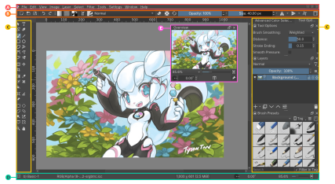
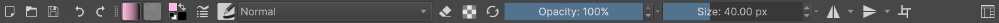

介面導航¶
介面¶
Krita's interface is very flexible and provides an ample choice for the artists to arrange the elements of the workspace. An artist can snap and arrange the elements, much like snapping together Lego blocks. Krita provides a set of construction kit parts in the form of Dockers and Toolbars. Every set of elements can be shown, hidden, moved and rearranged that let the artists easily customize their own user interface experience.
一覧 Krita 的使用者介面¶
As we've said before, the Krita interface is very malleable and the way that you choose to configure the work surface may not resemble those shown below, but we can use these as a starting point.
{kind=link}
A -- Traditional File or action menu found in most windowed applications.
B -- Toolbar -- This is where you can choose your brushes, set parameters such as opacity and size and other settings.
C -- Sidebars for the Movable Panels/Dockers. In some applications, these are known as Dockable areas. Krita also allows you to dock panels at the top and/or bottom as well.
D -- Status Bar -- This space shows the preferred mode for showing selection i.e. marching ants or mask mode, your selected brush preset, Color Space, image size and provides a convenient zoom control.
E -- Floating Panel/Docker -- These can be "popped" in and out of their docks at any time in order to see a greater range of options. A good example of this would be the 筆刷預設 or the 調色板.
Your canvas sits in the middle and unlike traditional paper or even most digital painting applications, Krita provides the artist with a scrolling canvas of infinite size (not that you'll need it of course!). The standard navigation tools are as follows:
控制畫布檢視¶
Many of the canvas navigation actions, like rotation, mirroring and zooming have default keys attached to them:
- 平移
This can be done through
 , Space +
, Space +  and the directional keys.
and the directional keys.- 縮放
Discrete zooming can be done through + and - keys. Using the Ctrl + Space or Ctrl +
shortcuts can allow for direct zooming with the stylus.- 鏡像
You can mirror the view can be quickly done via M key. Mirroring is a great technique that seasoned digital artists use to quickly review the composition of their work to ensure that it "reads" well, even when flipped horizontally.
- 旋轉
You can rotate the canvas without transforming. It can be done with the Ctrl + [ shortcut or 4`key and the other way with :kbd:`Ctrl + ] shortcut or 6 key. Quick mouse based rotation is the Shift + Space and Shift +
shortcuts. To reset rotation use the 5 key.
You can also find these under .
工具面板¶
Krita subdivides many of its options into functional panels called Dockers (also known as Docks).
Dockers are small windows that can contain, for example, things like the layer stack, Color Palette or list of Brush Presets. Think of them as the painter's palette, or his water, or his brush kit. They can be activated by choosing the Settings menu and the Dockers sub-menu. There you will find a long list of available options.
Dockers can be removed by clicking the x in the upper-right of the docker-window.
Dockers, as the name implies, can be docked into the main interface. You can do this by dragging the docker to the sides of the canvas (or top or bottom if you prefer).
Dockers contain many of the "hidden", and powerful, aspects of Krita that you will want to explore as you start delving deeper into the application.
You can arrange the dockers in almost any permutation and combination according to the needs of your workflow, and then save these arrangements as Workspaces.
Dockers can be prevented from docking by pressing the Ctrl key before starting to drag the docker.
滑動條¶
Krita uses these to control values like brush size, opacity, flow, Hue, Saturation, etc... Below is an example of a Krita slider.

The total range is represented from left to right and blue bar gives an indication of where in the possible range the current value is. Clicking anywhere, left or right, of that slider will change the current number to something lower (to the left) or higher (to the right).
To input a specific number,  the slider. A number can now be entered directly for even greater precision.
the slider. A number can now be entered directly for even greater precision.
Pressing the Shift key while dragging the slider changes the values at a smaller increment, and pressing the Ctrl key while dragging the slider changes the value in whole numbers or multiples of 5.
工具列¶
Toolbars are where some important actions and menus are placed so that they are readily and quickly available for the artist while painting.
You can learn more about the Krita Toolbars and how to configure them in over in the Toolbars section of the manual. Putting these to effective use can really speed up the Artist's workflow, especially for users of Tablet-Monitors and Tablet-PCs.
在 5.0 版本新加入: In addition to shortcuts and the toolbar, you can also search and quickly through all actions via the action search bar, which is accessed with Ctrl + Enter.
作業空間選擇器¶
The button on the very right of the Toolbar is the workspace chooser. This allows you to load and save common configurations of the user interface in Krita. There are a few common workspaces that come with Krita.
浮動畫具板¶

Pop-up Palette is a feature unique to Krita, designed to increase the productivity of the artist. It is a circular menu for quickly choosing brushes, foreground and background colors, recent colors while painting. To access the palette you have to just on the canvas. The palette will spawn at the position of the brush tip or cursor.
By tagging your brush presets you can add particular sets of brushes to this palette. For example, if you add some inking brush presets to inking tag you can change the tags to inking in the pop-up palette, and you'll get all the inking brushes in the palette.
You can tag brush presets via the 筆刷預設, check out the resource overview page to know more about tagging in general.
If you call up the pop-up palette again, you can click the tag icon, and select the tag. In fact, you can make multiple tags and switch between them. When you need more than ten presets, go into and change the number of presets from 10 to something you feel comfortable.